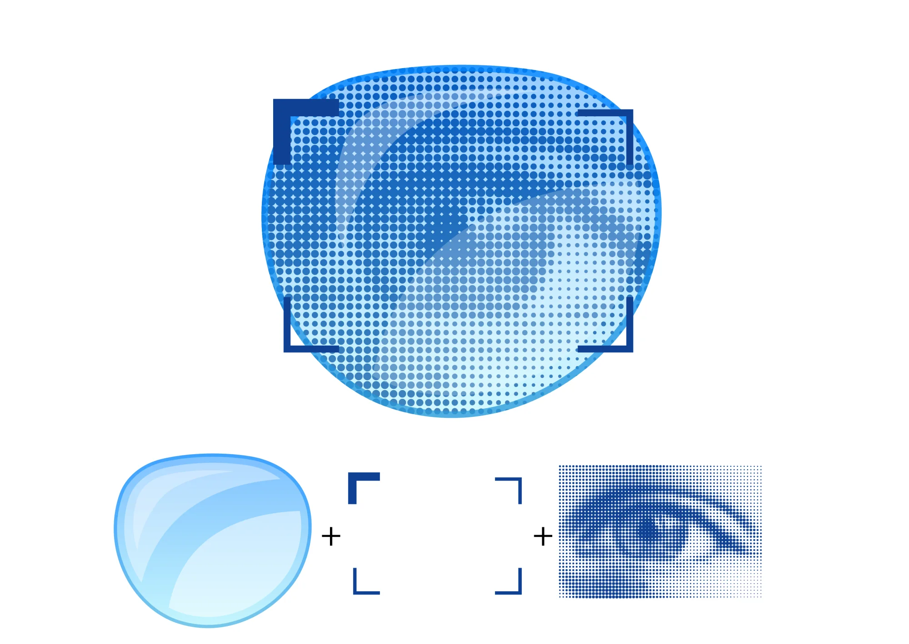
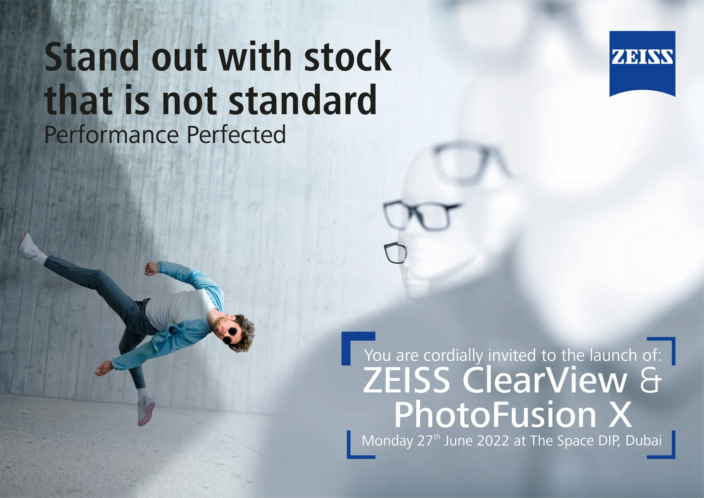

ZEISS
Two lenses, one night. I led it.
Antoni Gerges, Executive Creative Director · AntBrush, with Mission Control XZEISS launched two lenses in one night. I led it from the first sketch to the last screen: the idea, the invitations, the films, the space.
First, on paper.
The ZEISS brackets frame what you should look at. So we put the launch inside them: a lens, an eye, and an athlete who is not standard.



Then every piece,
in 3D.
Modelled here from the production artwork. Scroll to walk the guest’s way in. After each model, the same piece on the night.
The way in
One space: the long screen with our film, ten flags on the carpet. The camera walks the guest’s line.
Two signs
An arrow, the launch name, the logo. Printed on both sides.
The entrance wall
An L on the stairs. The athlete meets guests on the way up.
The ClearView wall
A photo wall and a row of mannequins, all wearing the lens.
The photo booth
My design. Two acrylic lenses, one clear and one tinted, the way PhotoFusion X darkens in the sun. Guests stand behind them.
The eye
The back wall of the product display.
74 feet of screen
Our film for the main wall: IT’S TIME, to NOT STANDARD.

Doors.
A countdown on the wall. Then the shutter rises on ZEISS.Film · Mission Control X
Keynote.
The two lenses, presented.Film · Mission Control X
Dinner.
One long table, under the gold car. Then the film of it all.Film · Mission Control X
Executive Creative Director
Idea, invitations, screen films, venue design, photo booth.
Film of the night by Mission Control X.

before the doors opened